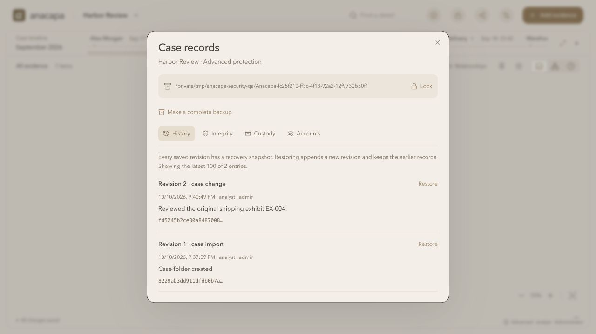

Case folders & security
A companion to the illustrated board and timeline guide. Learn how to create protected cases, preserve source records, verify originals, recover saved versions, and share useful copies.
1. Start with a folder
Click the case name, then New case. Enter a name and optional description, select Simple, Normal, or Advanced, and choose a folder on your computer. The folder window lets you browse Home, open subfolders, go to a parent folder, or type an absolute path and press Go.
Anacapa creates its own Anacapa-<id> folder inside the location you choose. Existing files in the parent folder are left intact. The new folder holds the case, original attachments, history, and recovery snapshots. Do not rename or move it while the app is using it.
Older investigations retain their original storage. Open the shield button → Case records → Save to a case folder to create a separate folder-backed copy. Creating an Advanced copy does not encrypt or erase the earlier case or source file.
2. Choose controls and protection
Simple keeps cards, dates, attachments, nested timelines, connections, and undo/redo visible with Normal protection. Optional card fields appear under More fields & sources. Open Settings → Case controls → Full for filters, pins, Tilt, and the Relationships browser. Normal exposes all tools without passwords or required reasons. An Advanced case can use Simple controls without changing its protection.
| Feature | Normal | Advanced |
|---|---|---|
| Case folder, preserved originals, saved versions | Included | Included |
| Sources, time zones, custody, verification | Available | Available |
| Password prompts | None | Local case account |
| Case contents on disk | Readable files | AES-256-GCM encrypted |
| Evidence changes | Quick save | Recorded operator and required reason |
| Shared .anacapa / HTML copies | Plain or protected | Always protected |
| Automatic lock | None | 10 minutes without interaction |
Advanced setup asks for an Administrator name and a passphrase of at least 12 characters. Accounts are local to that case; no email, internet, or external sign-in is involved. Keep the passphrase safe. There is no password-reset service.
The header lock button closes an Advanced session. Restarting the local server also locks cases. If the connection disappears, the app clears protected case content from the visible workspace and asks you to reconnect. Protected content is visible in memory while you are using it.
Local roles
Administrator: edits the case, records custody, restores versions, and manages local accounts. Editor: edits, records custody, and restores versions. Viewer: inspects and exports protected copies, but cannot edit, upload originals, restore versions, or change accounts through the server API.
Administrators add or revoke accounts in Case records → Accounts. Revocation ends that account’s local sessions. It does not retract information already read or exported. Case-folder backups include the local accounts as they existed when copied.
3. Give claims a source
Use the pencil to edit a card, then expand Sources & citations. Add the source name, exhibit or record reference, a page / timestamp / section, and the statement the source supports. Collection method, collector, source URL, and collection date with its zone provide additional context. Relationship editors offer the same source section for a connection.
Keep an observation separate from an inference. Confidence describes your assessment; it does not prove a claim. A common phone, address, IP, or tag suggests a connection worth reviewing, rather than establishing identity by itself.
Original attachments
Uploads preserve the received bytes and record SHA-256, byte count, app intake time, and operator. The app intake time is not the time the evidence was originally collected. Record that earlier context in a citation. Removing an attachment from a card removes its reference; the retained original stays in the case folder and remains part of integrity checks.
Dates across time zones
Expand Timeline placement and enter a UTC offset such as +05:30 or -04:00. Chronological ordering uses that offset. New cards start with the computer’s current offset; check it against the source’s zone, including daylight saving on the event date. A blank offset uses the computer’s local zone.
Choose Exact, Approximate, or Date only, and retain the original source timestamp when useful. The app orders events but does not calculate uncertainty ranges or imply that an approximate time is an exact measurement. The chart uses equal spacing, rather than an elapsed-time scale.
4. Use Case records
The shield button in the header opens a window with History, Integrity, Custody, Review, and, for an Advanced Administrator, Accounts. The board stays behind the rounded window.

History
Each saved revision gets a recovery snapshot and a history entry. Advanced changes to evidence require a reason before applying; moving, tilting, coloring, pinning, or arranging cards does not. A save may group several quick edits. The window shows the latest 100 entries, while older snapshots remain in the folder.
Imported shared files start a new local history chain. Earlier supplied history is retained as source records in a separate disclosure. Those entries are outside the new local chain and cannot be restored as local versions.
Integrity
Verify case integrity checks original attachments against recorded hashes, every recovery snapshot, and the history chain. Advanced mode also checks authenticated encryption and keyed signatures. New cases compare every saved head with a signed checkpoint outside the case folder. Download the receipt, retain it independently, and use Review → Compare a saved receipt to compare a current or earlier revision.
If verification reports changed or missing files, preserve the folder and a known-good backup. Investigate the cause before continuing. Verification compares against the available records; it does not certify that the underlying evidence was truthful.
Review
Separate checkpoints shows the configured journal path and signing-key fingerprint. An Administrator can move the journal to another drive or enable a baseline for an older or freshly attached folder. Writes stop if storage is missing or its records differ. Reconnect the same location and preserve unsaved edits; do not change hashes to silence a warning.
Case handling records a responsible person/team, procedure reference, review date, backup interval, retention hold, and instructions. Administrator changes are audited. These settings document decisions; they do not schedule jobs, obtain approval, delete evidence, or enforce retention outside the app.
Download case review reports integrity, checkpoint identity, source and time-zone coverage, handling settings, and backup status. Release test results show developer automated checks with their source fingerprint and remaining review limits.
Custody
Record the reported sender, recipient, transfer time and zone, method, and purpose. Anacapa adds the recording operator and timestamp. Corrections should be recorded as another entry. The app cannot observe or authenticate a physical transfer.
5. Restore a version or a complete folder
For a mistaken edit, open History, choose Restore beside a revision, and provide a reason. Restore creates a new save; earlier entries are retained. It restores case content while preserving the current custody log and local accounts.
An Administrator or Editor can choose Make a complete backup to copy the entire folder to another chosen location. It includes originals, all saved snapshots, history, local accounts, and a signed checkpoint receipt. The active case records the backup time after copying. The private signing key and separate journal are excluded. Advanced backups remain encrypted. A backup on the same drive helps with mistakes; use another drive for protection against device loss.
In a fresh app, choose the case menu → Open case folder and select the restored folder itself. Unlock an Advanced folder with one of its valid local accounts. A previous backup intentionally differs from the latest pinned checkpoint. Recover into a fresh installation, compare its supplied receipt using an independently retained signing-key fingerprint, then configure new checkpoints. If the same case ID is already registered, use the existing case’s History restore or a fresh workspace rather than opening two competing copies of that ID.
Keep .anacapa-data in the app directory too: it stores the registry, older investigations, signing key, and trusted checkpoint records. Preserve the configured journal location too. Workspace backup exports Normal case JSON references and excludes Advanced cases; it is not a complete original-file backup. Saved versions are retained without automatic purging, so watch disk space.
7. Understand what protection covers
Advanced mode provides local safeguards. It is not a CJIS certification, independent forensic validation, or approval to use the app as an agency’s production evidence system.
Encryption covers case content, original bytes and metadata, history, and snapshots. Folder IDs, mode, account names and roles, and checkpoint metadata remain visible. Password-derived keys use PBKDF2-SHA256 with random salts and 600,000 iterations; case data uses authenticated AES-256-GCM. Passwords are not stored in browser storage.
Separate Ed25519 signatures detect rewriting or rollback of only the case folder against the pinned journal. A compromised computer can still copy an unlocked case or replace the folder, signing key, journal, and trusted registry together. A fresh installation has no pinned key for an attached folder; verify its fingerprint independently before relying on a supplied receipt. Keep receipts independently and use device encryption, OS account separation, independent backups, and applicable organizational procedures. There is no external trusted timestamp, physical custody verification, or prevention of deliberate copying by a recipient.
The app remains local-only. There is no cloud collaboration, automatic entity merging, large-graph virtualization, or external recovery account. Use supported modern browsers and Node.js 22.13 or newer. A shared case supports up to 50 MB of attachment bytes, 10 MB per file, and import files up to 75 MB plain or 100 MB protected.